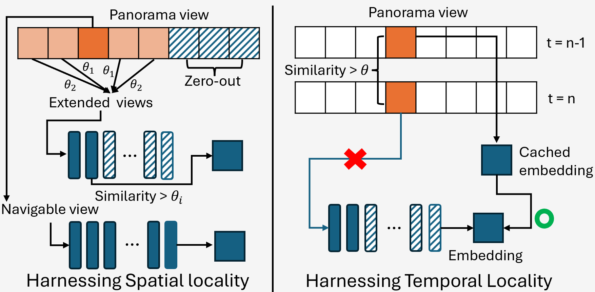
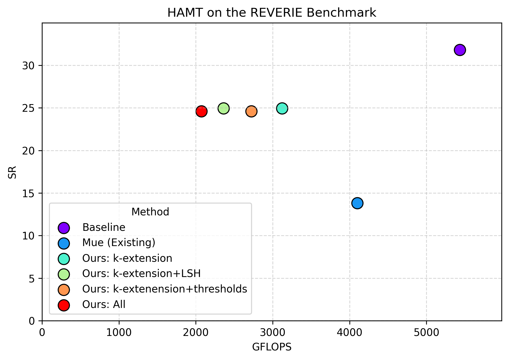
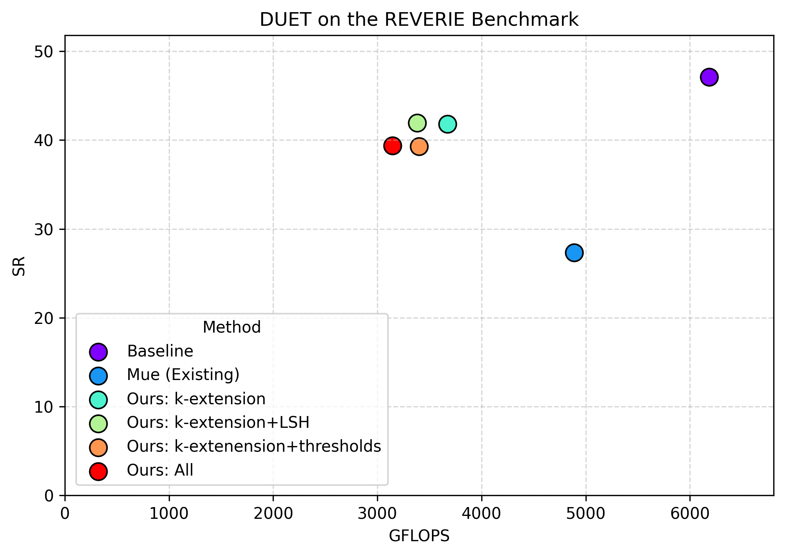
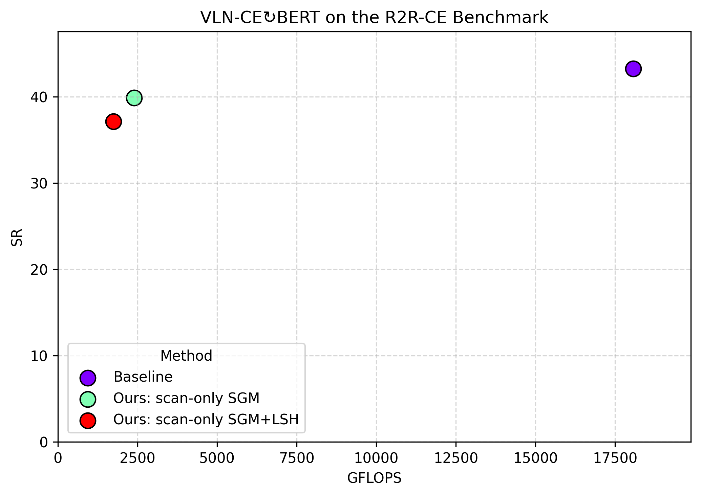
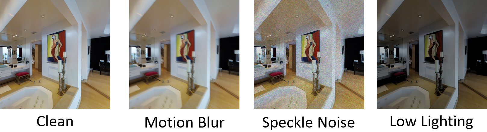

🔒 Challenges
(1) Modern VLN agents use large multi-modal transformers, which are compute-intensive.
(2) Existing input-adaptive methods do not transfer effectively to VLN settings.
🌟 Input-Adaptive VLN Framework: We introduce the first input-adaptive inference approach for VLN.
🌟 Efficiency Gains: Across 7 VLN benchmarks, we improve efficiency by 1.7-7.5× while retaining 77–89% of task success.
🌟 Visual Corruptions Evaluation: We analyze the robustness of VLN agents under real-world visual corruptions.
(1) Modern VLN agents use large multi-modal transformers, which are compute-intensive.
(2) Existing input-adaptive methods do not transfer effectively to VLN settings.
We introduce a novel input-adaptive VLN framework that dynamically adjusts computation during navigation to prevent model overthinking while preserving navigation quality.
👉 k-extension: We only process each navigable view + k adjacent views.
Insight: Views near navigable views contain most decision-relevant context, so we can skip the rest.
👉 Adaptive early-exiting (thresholds): We early-exit adjacent views with thresholds based on proximity to navigable views (closer = more conservative).
Insight: Lower-importance views can be processed for fewer layers without degrading performance.
👉 Locality-sensitive hashing (LSH): We store and re-use similar visual embeddings across steps.
Insight: Consecutive panoramas repeat content; caching avoids re-encoding near-duplicate views.

👉 Adaptation to continuous VLN (scan-only SGM): We modify the subgoal prediction module to only process laser scan data.
👉 Standard VLN (HAMT and DUET): Averaged across 6 benchmarks, we reduce GFLOPs by 2.3× with just an 11.7% drop in success rate (SR).
👉 Continuous VLN (VLN-CE-BERT): We reduce GFLOPs by 7.1–7.5× with an 8–14% drop in SR.



👉 Our agent is vulnerable: 12.3–31.3% SR loss with a 3.6–20.9% increase in GFLOPs.
👉 Denoising is a promising countermeasure: Recovers SR by 18% and reduces GFLOPs by 6%.

@inproceedings{kang2025harnessing,
title={Harnessing Input-adaptive Inference for Efficient VLN},
author={Kang, Dongwoo and Perincherry, Akhil and Coalson, Zachary and Gabriel, Aiden and Lee, Stefan and Hong, Sanghyun},
booktitle={International Conference on Computer Vision},
year={2025},
}